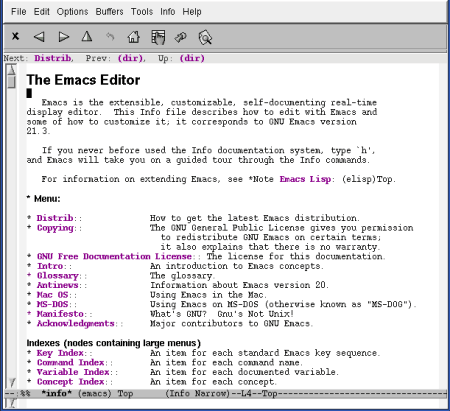
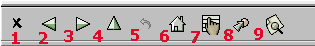

19. Documentación de Emacs
Pág.Anterior | Índice
Emacs nos proporciona una completa documentación sobre la aplicación y aspectos relacionados con ella.
19.1 El Tutorial.
Pág.Anterior | Índice | Inicio Página |
Como ya se mencionó en el Capítulo IV [IV.vii], Emacs dispone de un excelente tutorial de introducción. Nos referimos al mencionado Capítulo en lo que respecta al acceso al Tutorial.
19.2 Usando los Manuales de Emacs.
Pág.Anterior | Índice | Inicio Página |
Los Manuales de Emacs se encuentran en formato TextInfo.
Para acceder al Manual de Emacs ejecutaremos el siguiente comando:
- Opción de menú : Help --> Read the Emacs Manual
- Comando : C-h i
- Comando "largo" : M-x info <Enter>
Se nos abre el buffer *info*, de sólo-lectura, conteniendo el nivel superior de la estructura INFO,
Situados en INFO, , pulsando la tecla b accederemos al Tutorial de utilización de INFO,
|  |
Podemos observar los cambios en el menú y en la barra de herramientas del buffer *info*,
|  |
Para movernos por el buffer *info*, podemos utilizar el ratón y los iconos de la barra de herramientas, asi como una serie de comandos. Seguidamente se relacionan éstos, con su correspondencia con los iconos de la barra de herramientas:
- Comando : <Tab>
- Comando "largo" : M-x info-next-reference <Enter>
- Mueve el cursor a la próxima entrada del índice o a la próxima referencia.
- Comando : <AvPág> o, también <Space>
- Comando "largo" : M-x info-scroll-up <Enter>
- Desplaza la pantalla hacia arriba (Avanza Página).
- Comando : <RePág> o, también <BackDel>
- Comando "largo" : M-x info-scroll-down <Enter>
- Desplaza la pantalla hacia abajo (Retrocede Página).
- Icono : 1
- Opción de menú : Info --> Exit
- Comando : q
- Comando "largo" : M-x Info-exit <Enter>
- Abandona INFO.
- Icono : 2
- Opción de menú : Info --> Previous
- Comando : p
- Comando "largo" : M-x Info-prev <Enter>
- Mueve el cursor al anterior tema, en el actual nivel.Si no existiera tema previo, sube un nivel.
- Icono : 3
- Opción de menú : Info --> Next
- Comando : n
- Comando "largo" : M-x Info-next <Enter>
- Mueve el cursor al siguiente tema, en el actual nivel.
- Opción de menú : Info --> Beginning
- Comando : .
- Va al inicio del nodo actual.
- Opción de menú : Info --> Forward
- Comando : ]
- Comando "largo" : M-x Info-forward <Enter>
- Avanza un nodo (considerando cada nodo como una unidad).
- Opción de menú : Info --> Backward
- Comando : [
- Comando "largo" : M-x Info-backward <Enter>
- Retrocede un nodo (considerando cada nodo como una unidad).
- Icono : 4
- Opción de menú : Info --> Up
- Comando : u
- Comando "largo" : M-x Info-up <Enter>
- Sube un nivel.
- Icono : 5
- Opción de menú : Info --> Last
- Comando : l
- Comando "largo" : M-x Info-last <Enter>
- Va al último nodo visitado.
- Icono : 6
- Opción de menú : Info --> Top
- Comando : t también <
- Comando "largo" : M-x Info-top-node <Enter>
- Va al nodo superior (Home).
- Opción de menú : Info --> Final Node
- Comando : >
- Comando "largo" : M-x Info-final-node <Enter>
- Va al nodo final .
- Icono : 7
- Opción de menú : Info --> Index --> Lookup a String
- Comando : i
- Comando "largo" : M-x Info-index <Enter>
- Busca un tema en el índice.
- Opción de menú : Info --> Index --> Next Matching Item
- Comando : ,
- Comando "largo" : M-x Info-index-next <Enter>
- va a la siguiente ocurrencia de la búsqueda efectuada con el comando anterior.
- Icono : 8
- Opción de menú : Info --> Go to Node
- Comando : i
- Comando "largo" : M-x Info-goto-node <Enter>
- Se desplaza a un nodo especificado.
- Icono : 9
- Opción de menú : Info --> Search
- Comando : i
- Comando "largo" : M-x Info-search <Enter>
- Busca una expresión regular.
- Opción de menú : Help --> Manuals --> Find Key in Manual
- Comando : C-h C-K
- Comando "largo" : M-x Info-goto-emacs-key-command-node <Enter>
- Nos da información sobre una determinada secuencia de teclas. Abre la documentación INFO en el punto en que de trata sobre la secuencia de teclas consultada.
- Opción de menú : Help --> Manuals --> Find Command in Manual
- Comando : C-h C-F
- Comando "largo" : M-x Info-goto-emacs-command-node <Enter>
- Nos da información sobre un determinado comando. Abre la documentación INFO en el punto en que de trata sobre la el comando consultado.
- Opción de menú : Help --> Manuals --> Browse Manuals with Info
- Nos abre un índice con todas la documentación disponible sobre Emacs.
19.3 Otra Documentación de Emacs.
Pág.Anterior | Índice | Inicio Página |
Información sobre el Proyecto GNU.
- Comando : C-h C-p
- Comando "largo" : M-x describe-project <Enter>
Nos muestra, en el buffer THE.GNU.PROJECT, la información sobre el Proyecto GNU.
FAQ.
- Opción de menú : Help --> Emacs FAQ
- Comando : C-h F
- Comando "largo" : M-x view-emacs-FAQ <Enter>
Nos muestra, en un buffer *info*(efaq), la documentación relativa a las FAQ sobre Emacs.
News.
- Opción de menú : Help --> Emacs News
- Comando : C-h n
- Comando "largo" : M-x view-emacs-news <Enter>
Nos muestra, en un buffer NEWS, la documentación relativa a las News sobre Emacs.
Problemas conocidos.
- Opción de menú : Help --> Emacs Know Problems
- Comando : C-h P
- Comando "largo" : M-x view-emacs-problems <Enter>
Nos muestra, en un buffer PROBLEMS, la documentación relativa a los problemas conocidos de Emacs.
Pedido de Manuales Impresos.
- Opción de menú : Help --> Ordering Manuals
- Comando : C-h RET
- Comando "largo" : M-x view-order-manuals <Enter>
Nos muestra, en un buffer ORDERS, información de como y donde realizar los pedidos de manuales impresos de Emacs.
Comunicación de "bugs".
- Opción de menú : Help --> Send Bug Repport
Inicia el sistema de comunicación ,por el usuario, de posibles "bugs".
Búsqueda de paquetes.
- Opción de menú : Help --> Find Packages
- Comando : C-h p
Búsqueda de paquetes de Emacs através de palabras-clave. Nos abre el buffer *Finder*, con la relación de las palabras-clave.
Búsqueda de paquetes extras.
- Opción de menú : Help --> Find Extra Packages
Nos abre el buffer MORE.STUFF, en el que se nos informa de los recursos y programas mantenidos por terceras partes..
Información sobre la versión de Emacs.
- Opción de menú : Help --> Show Emacs Version
Nos informa, mediante un mensaje en el mini-buffer, de la versión de Emacs que estamos utilizando.
Obtención de nuevas versiones de Emacs.
- Opción de menú : Help --> Getting New Versions
- Comando : C-h C-d i>Comando "largo" : M-x describe-distribution <Enter>
Nos abre el buffer DISTRIB, en el que se nos informa sobre la forma de obtener las últimas versiones de Emacs.
Información sobre la licencia GLP de Emacs.
- Opción de menú : Help --> Copying Conditions
- Comando : C-h C-c
- Comando "largo" : M-x describe-copying <Enter>
Nos abre el buffer COPYING, en el que se nos informa sobre la licencia GLP de Emacs.